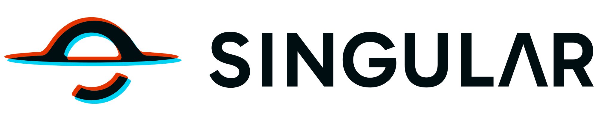

Make evidence useful.
Use real, approved proof. Add its source and context before it becomes a claim.
Read the writing guide

Website / LandingA calm canvas for the story. Shared patterns for the structure.
Build a website that is easy to understand, navigate, and use.
Reference: main · ef592ba Reviewed 12 Oct 2026
Start with the reader’s situation. Then reveal the system, the evidence, and the next useful step.
A wider hero, a continuous page canvas, and deliberate spacing. The structure stays steady; your content gives it meaning.
Show the next step clearly.
Primary actionWhy it matters
What supports it
What happens next
Cards, headings, chips, and big-pill tabs use the same tokens. Layer the detail without making the reader learn a new interface.
Use real, approved proof. Add its source and context before it becomes a claim.
Read the writing guideDirectional reveals are optional. Keyboard navigation is built in. Continuous motion has a pause control and a static reduced-motion fallback.
Direction and distance belong to Reveal, not a new component per page.
Use arrow keys, Home, and End in these tabs. The active panel is focusable.
The marquee below stops on hover, focus, or explicit pause.
Building blocks, not customer endorsements
Portable React APIs and shared CSS. Your host owns navigation, routes, booking, customer data, and commercial claims.
Light-first surfaces and readable interaction colors. Dark mode uses the same navy palette as the app.
Explore the tokensThree hero sizes, two layouts, short mobile CTAs, and headings with explicit width control.
View the source APIsUse TestimonialCard for approved quotes. Ratings, metrics, and logos stay with their source and permission.
Review what was promotedExport the website profile, load the tokens and styles, and compose with the real APIs. Start with the guide and the setup requirements.